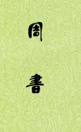

| 历史史籍 > |
| 周书 |
| 作者：令孤德棻 主编 |
|
周书，纪传体断代史，本纪8卷、列传42卷，共50卷。唐令狐德棻主编，参加编写的还有岑文本和崔仁师等人。成书于贞观十年（636年）。记载北周宇文氏建立的周朝（557—581）的历史。叙事繁简得宜，文笔亦极简劲。 令狐德棻（583-666），宜州华原人，出身敦煌郡豪门，博涉文史，少有文名。隋朝末年，授药城县令。唐高祖时，任大丞相府记室，后迁起居舍人、礼部侍郎，国子监祭酒，太常卿、弘文馆、崇贤馆学士等职。奏请重修梁、陈、北齐、北周及隋朝史，被采纳，主编《周书》，封彭阳郡公。龙朔二年（662），加金紫光禄大夫。卒于家，年八十四，谥号曰宪。 [2018/12/21，重新整理] |
 |